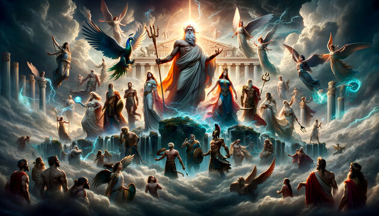

La mitología griega es el conjunto de mitos y leyendas pertenecientes a los antiguos griegos que tratan de sus dioses y héroes, la naturaleza del mundo y los orígenes de sus propios cultos y prácticas rituales.
A diferencia de otras religiones modernas, no tenían un libro sagrado único (como la Biblia). En su lugar, la mitología era una tradición oral que luego fue plasmada por poetas como Homero (en la Ilíada y la Odisea) y Hesíodo (en la Teogonía).
Proyecto Educativo 1ºBachillerato Miguel Jiménez García IES Blas Infante